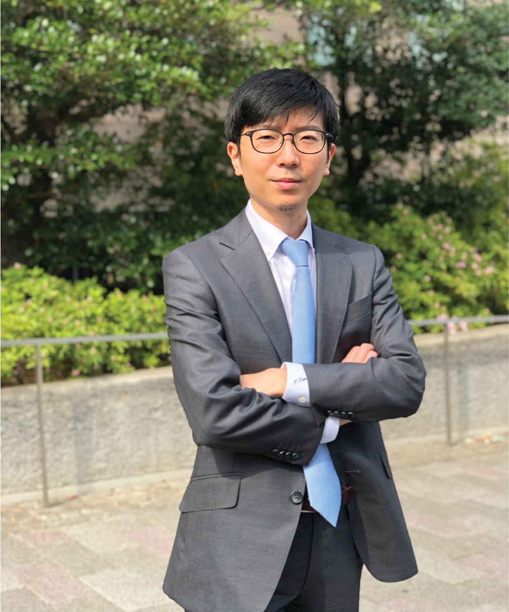

Profile
Education Background
2014.04-2019.03 Department of Advanced Science and Engineering, Guraduate School of Advanced Science and Engineering, Waseda University (Doctor of Engineering)
2009.04-2014.03 Department of Life Science and Medical Bioscience, School of Advanced Science and Engineering, Waseda University (Bacheler of Science)
Professional Experience
2017.04-2019.03 Research Fellowship for Young Scientists, Japan Society for the Promotion of Science (JSPS)
2019.04-2021.03 Assistant Professor (without tenure), Center for Data Science, Waseda University
2021.04-Present Associate Professor (without tenure), Center for Data Science, Waseda University
Study Abroad Experience
2017.02-03 Panče Naumov Group, New York University, Abu Dhabi
2018.09-11 Pierre Lambert Group, Université Libre de Bruxelles
Grants
2016.06-2017.03 Waseda Research Institute for Science and Engineering, Early Bird Program, Principal Investigator
2017.04-2019.03 JSPS Research Fellowships for Young Scientists (No. 17J10691) Principal Investigator
2019.08-2021.03 JSPS Grant-in-Aid for Research Activity Start-up (No.19K23638) Principal Investigator
2020.04-2022.03 JSPS Grant-in-Aid for Scientific Research on Innovative Areas "Soft Crystal" (No. 20H04677) Principal Investigator
2020.12-2025.03 Bio-oriented Technology Research Advancement Institution, Moonshot Goal 5 (No. JPJ009237) Co-Investigator
Awards
2015.06 Poster Award, Symposium on Molecular Chirality 2015
2015.07 Outstanding Poster Presentation Award, ICCOSS XXII
2016.09 Oral Presentation Award, 25th Symposium on Organic Crystals
2017.04 Travel award supported by ICDD to attend ICCOSS XXIII
2017.04 poster prize, ICCOSS XXIII
2017.07 Poster Presentation Award, Chirality 2017
2019.03 Ono Azusa Memorial Award, Waseda University
2019.03 Student Presentation Award, The 99th CSJ Annual Meeting
2019.12 Inoue Research Award for Young Scientists, Inoue Foundation for Science
Professional Societies
The Chemical Society of Japan
Division of Organic Crystals, The Chemical Society of Japan
The Crystallographic Society of Japan
The Japanese Photochemistry Association
Committee Service
2020.11 Molecular Chirality Asia 2020, Secretary General